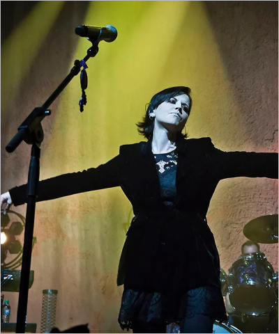
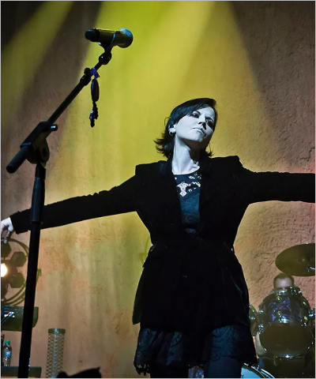

Most streamed Rock songs on Spotify
Since its launch as a humble Swedish start-up in 2008, Spotify has grown to become the biggest streaming platform in the world. And love it or hate it, Spotify is an important metric of success in the modern music industry. Drake became the first artist to achieve a billion streams for a single song, with One Dance in 2016. Since then, a total of 446 songs have passed that same milestone, with two – The Weeknd’s Blinding Lights and Ed Sheeran’s Shape Of You surpassing an incredible 3 billion plays each. When it comes to rock music, and especially legacy rock music, there are questions of demographic and preference at play. Nearly two thirds of Spotify’s users are aged under 35 and rock fans are more likely than others to listen to traditional radio and music on physical formats. The average age of the Spotify user is creeping up though and streaming is now by far the most common method of music consumption across all combined age groups. Queen are the best-performing rock band to have joined Spotify’s Billions Club. The 2011 remaster of Bohemian Rhapsody is currently sitting pretty at nearly 2.2 billion streams and they also have another four tracks in the list. Elsewhere, AC/DC have three billion-streamers in Back In Black, Highway To Hell and Thunderstruck. Notable by their absence are monsters of rock like the Rolling Stones, whose best-performing track Paint It Black is just shy of 938 million streams, the Foo Fighters (with Everlong on more than 886m) and Led Zeppelin (846m for Stairway To Heaven).

Coachella 2024
This year's Coachella event began attracting negative publicity even before the doors opened last Friday. In January, SFGate reported that Coachella 2024 was beset by the festival's slowest ticket sales in a decade. Things picked up, but according to Billboard, only 80% of the 250,000 tickets available sold out before the festival began, which is "14% -17% down" on last year.
Guitars at auction
If there’s one Kurt Cobain guitar moment that’s become even more iconic than the Teen Spirit video, it’s Nirvana’s incredible bittersweet performance on MTV Unplugged. Kurt bought the D-18E in 1992at Voltage Guitars in Los Angeles, and it’s a rare bird for Martin guitars in that it came out of the factory with the DeArmond pickups. Guitar sold out for $6,010,000.

The Dark Side of the Moon
The Dark Side of the Moon is the eighth studio album by the English rock band Pink Floyd, released on 1 March 1973 by Harvest Records in the UK and Capitol Records in the US. After Half a Century, 'The Dark Side of the Moon' Still Reverberates. Pink Floyd's enduring blockbuster merged grandeur and malaise. Very much a product of its era, it became one of the best-selling albums of all time.

Eurovision and Rock
Of course there is no Eurovision without Rock music. People around the world really likes some crazy songs and shows. Rock bands have Success at Eurovision. Italian rock band Måneskin, became winner of Eurovision 2021. Käärijä from Finland took 2nd place at Eurovision song contest 2023 and Baby Lasagna from Croatia took 2nd place at Eurovision song contest 2024.
Photos


 
